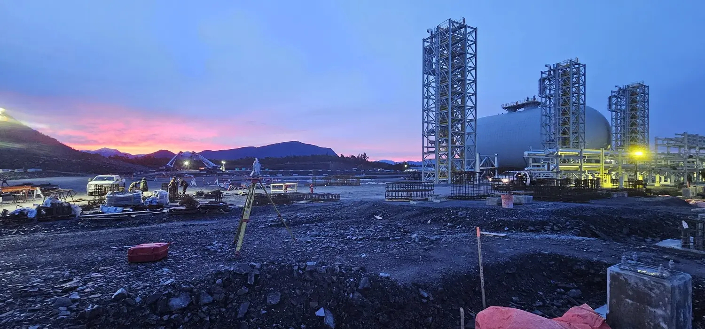
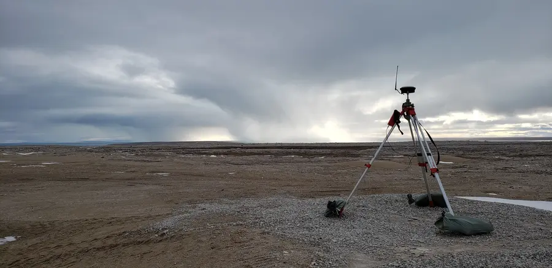

Health, safety & quality
Zero incidents. Zero compromise.
Fifteen years of operations without a recordable incident, and deliverables bound by ASTTBC standards before they leave the office.
- Years of operations
- 15+
- Recordable incidents
- 0
- ASTTBC compliant
- 100%
In the field
Safety is embedded in every field procedure, daily briefing and project plan.
- 01
Field procedures
Safety is part of how each task is carried out, not a separate step.
- 02
Daily briefings
Every field day starts with the crew briefed on the site and the work.
- 03
Project plans
Safety is planned into the project before the crew mobilizes.

Quality assurance
From field collection to final deliverable.
Every deliverable passes through the same four checks before it reaches you.
- 01
Collected in the field
Measured under daily briefings and established field procedures.
- 02
Checked on site
Observations are checked in the field, not days later at the office.
- 03
Multi-eye review
A rigorous internal review by more than one set of eyes before release.
- 04
Released to ASTTBC standards
Deliverables are bound by ASTTBC standards before they leave the office.

Community first
Partnerships, local people and mentorship.
Deeply committed to First Nations partnerships — prioritizing local community members, customized training, and ongoing mentorship within our project teams.
Have a project in mind?
Let’s get to work.
Tell us where the site is and what the schedule looks like. Aurora, based in British Columbia and working across Canada, will tell you what it takes to hold it.